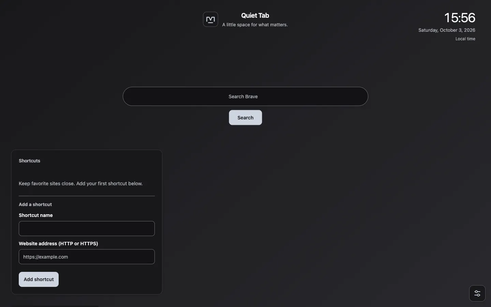

Start with the essentials
Clock and time zones, your search provider, and shortcuts to the places you use.
A local-first new tab dashboard
Your clock, links, notes, and tasks. A calm place to begin, with only the widgets you choose.
In active development. Install locally; no store release is advertised.

Useful, not overwhelming
Clock and time zones, your search provider, and shortcuts to the places you use.
Lightweight notes and todo lists, saved on your device and usable offline.
A full-width, mobile-responsive layout. Add, move, or hide widgets in Customize mode.
Light, dark, or system mode. Choose Ocean, Forest, Sand, Terracotta, or Graphite.
Local photos or opt-in automatic wallpapers. Optional city weather, with clear offline states.
Opt-in Google Drive note sync and sharing. Local notes never require a Google account.
Get started
The full dashboard is being developed locally and is not yet available as a published download. The public repository may still contain the original boilerplate; the steps below apply to a dashboard development checkout.
Start with a Quiet Tab checkout containing manifest.json, app.js, and widgets.js. Follow the GitHub repository for source updates.
Open chrome://extensions, turn on Developer mode, and choose Load unpacked. Select the repository folder containing manifest.json.
Use the Customize icon in the bottom-right corner to add widgets and change the appearance. Choose Done to hide editing controls.
Browser packages can be generated with node scripts/package.mjs chromium, firefox, or safari. Firefox distribution requires Mozilla signing. Safari requires Apple packaging/signing and explicit new-tab selection. These packages do not establish verified browser support; responsive layout does not guarantee mobile extension installation.
Google Drive needs publisher-owned OAuth configuration. Safari additionally needs a real native authentication bridge. Online wallpapers request provider access only when enabled. Open-Meteo's keyless weather service is for permitted non-commercial use.
Local by default
No account is needed for the core dashboard. Network features are explicit opt-ins, not a condition for using your local notes, tasks, or shortcuts. This website uses no JavaScript, analytics, or third-party fonts.